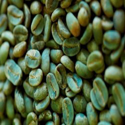

| Home | History | How to make | Social aspect | What makes Arabic coffee unique! |
|---|
What Makes it unique!
1) What really makes Arabic coffee unique and special is the various selection of
beans and the method of roasting it. They can range from lightly roasted, medium to
dark roasted. At times all of the different roasted beans are mixed together
2) In addition, when making Arabic coffee many add spices into the process of
making it. In order to give it a slight spicy flavour to it. No other country adds spices
to their morning or evening coffee.
3) People around the world usually add milk to their coffee. However when having
arabic coffee milk should never be added, because it would ruin the aroma of the
coffee.
4) The coffee beans that are used in most Arab countries are light and the color of the
bean is actually green.
Like this:
